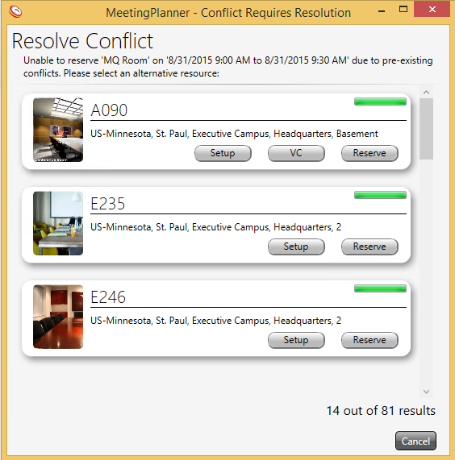

Page summary display
template('MindTouch/Controls/PageOverview'); Meeting Conflicts
Users are unable to create reservations that conflict; MP6 will return alternate available rooms at the desired time/date when a conflict occurs.

Important! If a conflict occurs and a user selects cancel instead of an alternate room from the ‘Resolve Conflict’ window, the meeting time and date will be saved without a room.
Page tags: article:topicMeetingPlanner 6Using MeetingPlanner 6MP 6 Meeting Conflictspersona:UserFacilitiesMgr